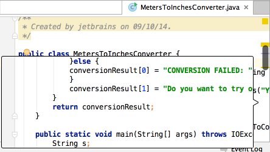
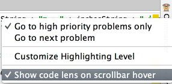

Hover your mouse pointer over a warning, error stripe or just some section of source code on the scroll bar outside of the scroll box, and you will see a lens:

If the lens annoys you, get rid of it by clearing the check box on the context menu of the code analysis marker:
